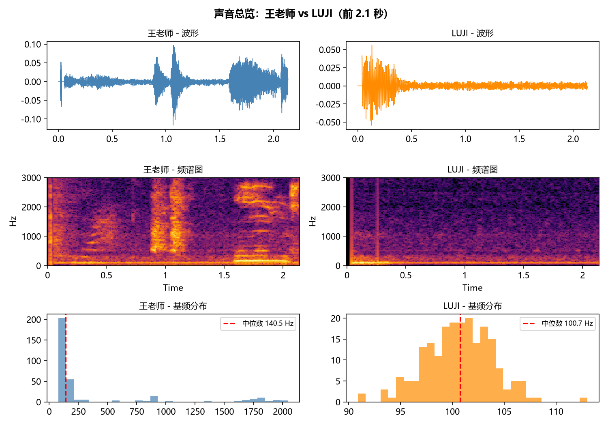
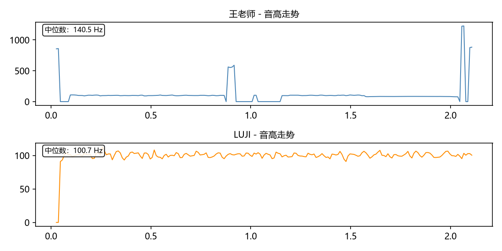
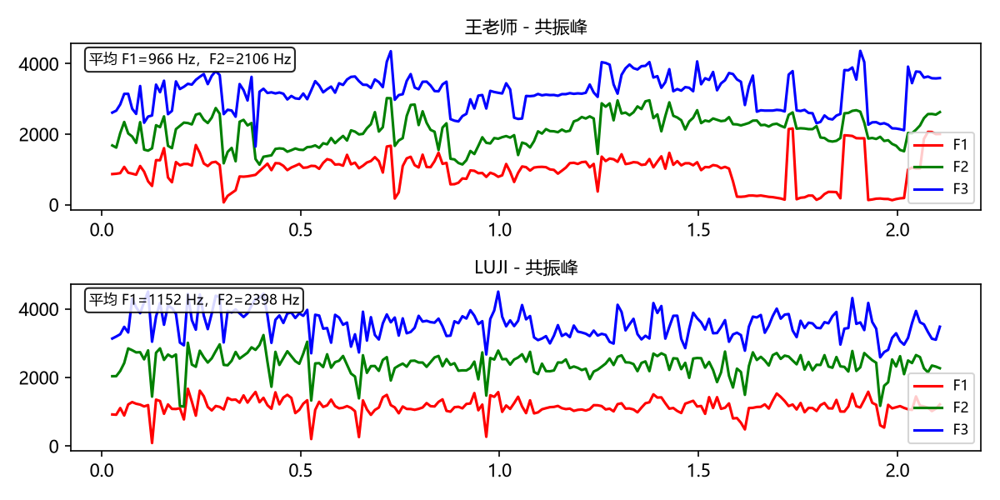
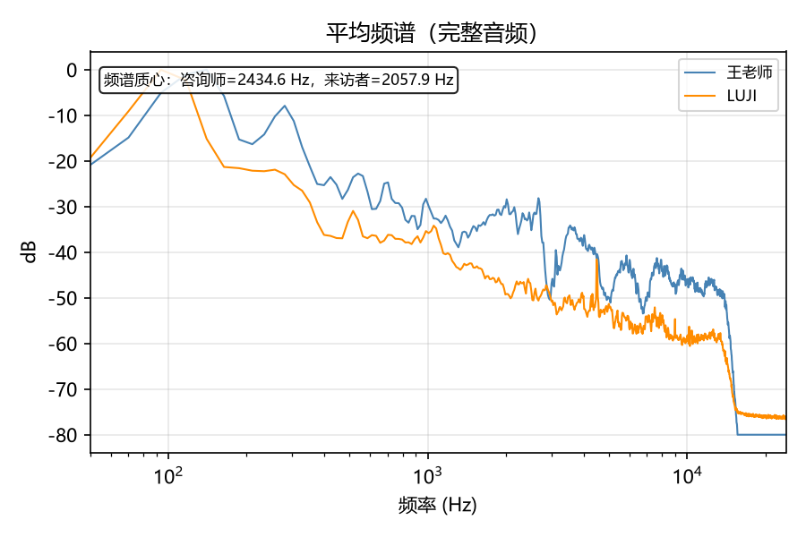
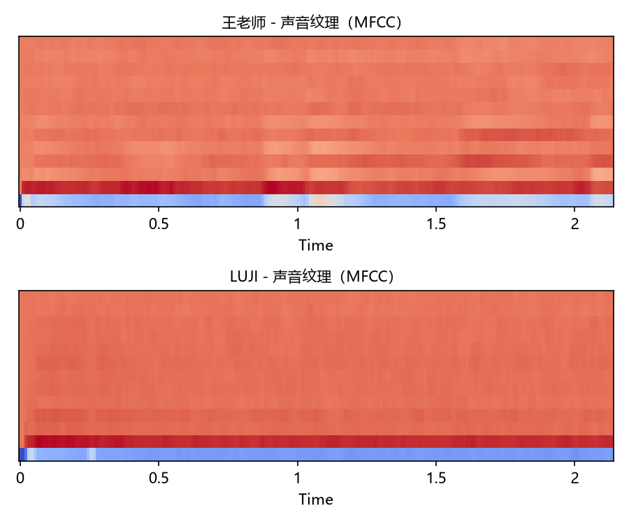

王老师 vs LUJI
声音相似度 HTML 报告
系统判断：需要人工复核，把握程度为低。综合分为 0.666，音色相似度为 0.999。两段声音的音高相差约 5.8 个半音，共鸣位置差约 403 Hz。可以把这些数字理解为辅助线索：分数越高、差异越小，两段声音听起来通常越接近；但录音环境、情绪和说话内容也会影响结果。
| 咨询师音高 | 140.47 Hz |
|---|---|
| 来访者音高 | 100.75 Hz |
| 音高差 | -5.8 半音 |
| 音色相似度 | 0.999 |
| 音高相似度 | 0.520 |
| 共鸣差异 F2 | 403 Hz |
| 共鸣差异比例 | 1.00 |
| 明亮度差异 | 377 Hz |
| 声音纹理相似度 | 0.999 |
| 综合分 | 0.666 |
| 结论 | 需要人工复核（置信度：低） |




